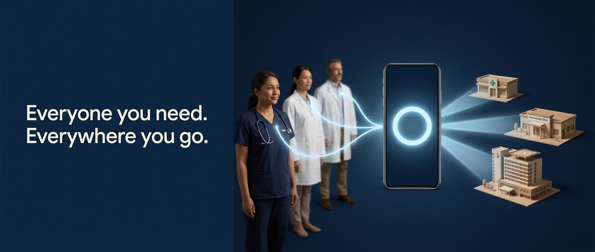
W3
In and Out
most directEveryone you need. Everywhere you go.
Specialists in, care out. Pura connects both directions from one place.
- Answers
- BOTH whiteboard panels in one frame: people converge in, places radiate out.
Five billboards and five digital verticals for Pura, generated with Gemini 3 Pro Image. Every direction descends from a measured reference in the 80 entry moodboard, not from taste.
The moodboard measured what survives a billboard. By treatment: photographic 100% viable, 3D render 86%, flat vector 26%. By arrangement: container, gestalt, object metaphor, miniature world and replacement all 100%, while the ring of labelled services scores 36%.
The original whiteboard sketched that ring. The idea is kept. The execution is not a diagram, because labelled rings die at distance.
Both panels share three things: the phone is the central object, the entities are named and specific (Cardiologist, Endo, Gyno on the left; hospital, clinic, pharmacy on the right), and the connections are visible.
The moodboard measured labelled diagrams at 36% billboard viability, so the craft problem is keeping the diagram and surviving distance. The resolution: replace text labels with things that read instantly. A cardiologist in scrubs is the label. A green cross is the label. Then make the connections physical light rather than thin lines.
These five run from the most direct reading of the sketch to the most abstract. Direct explains the proposition. Abstract is brand. A launch sequence would run direct first, abstract later.

Everyone you need. Everywhere you go.
Specialists in, care out. Pura connects both directions from one place.
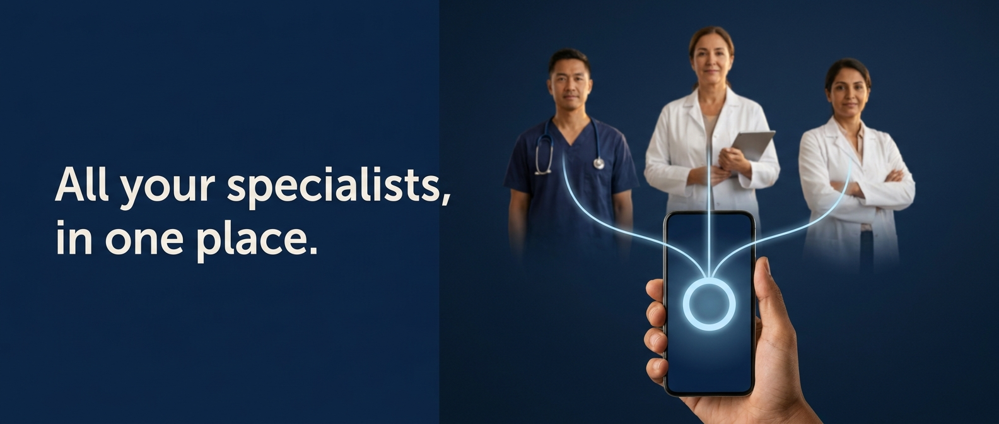
All your specialists, in one place.
Cardiology, endocrinology, gynaecology. One app, one record, one conversation.
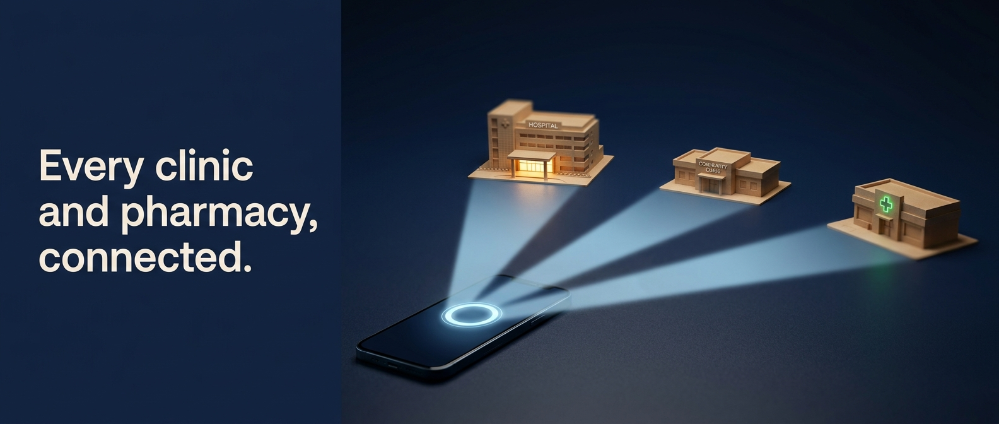
Every clinic and pharmacy, connected.
Book, consult, collect. Your whole care network, reachable from one screen.
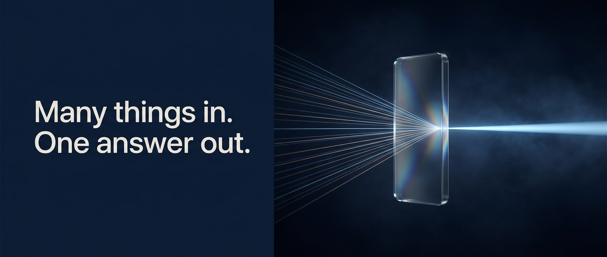
Many things in. One answer out.
Every signal your body sends, resolved into one clear next step.
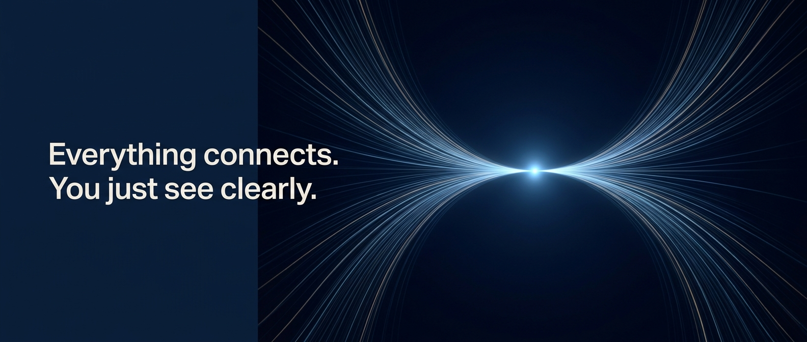
Everything connects. You just see clearly.
Specialists, clinics and pharmacies, working as one quiet system behind you.
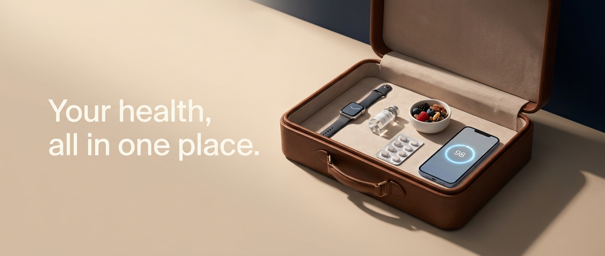
Your health, all in one place.
Consultations, prescriptions, nutrition, wearables and your score.
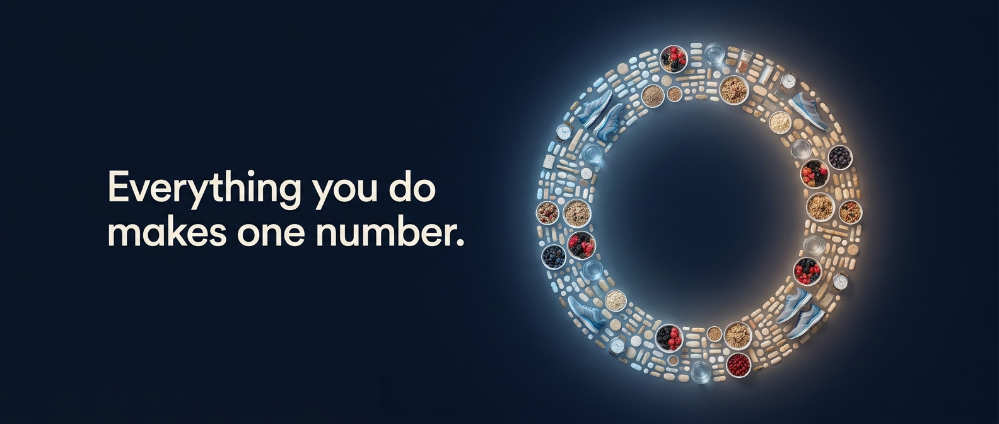
Everything you do makes one number.
Sleep, movement, meals and medicine, resolved into your PureScore.
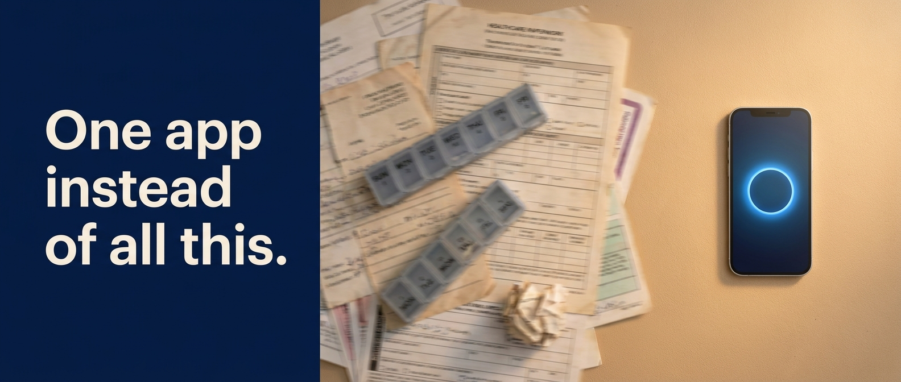
One app instead of all this.
Appointment cards, paper results, portals and pill boxes, replaced.
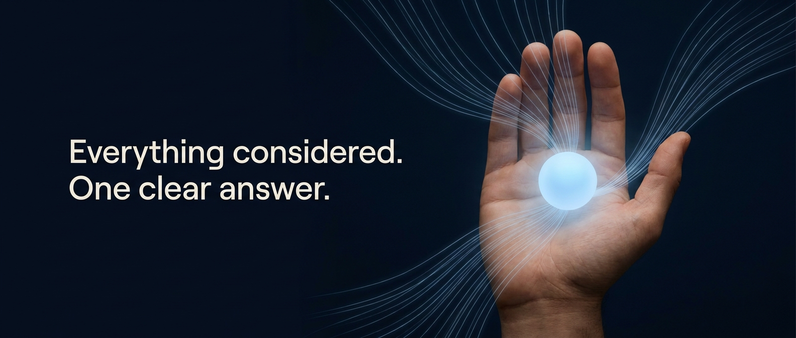
Everything considered. One clear answer.
Your whole picture, read together, so the next step is obvious.
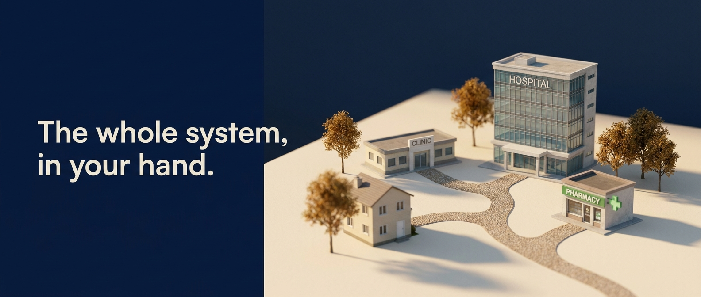
The whole system, in your hand.
Hospital, clinic, pharmacy and home, working as one.
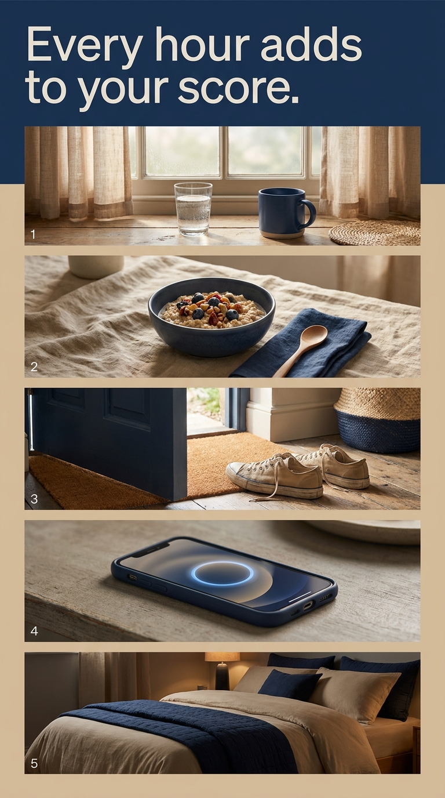
Every hour adds to your score.
Morning light, a meal, a walk, a night of sleep. All of it counts.
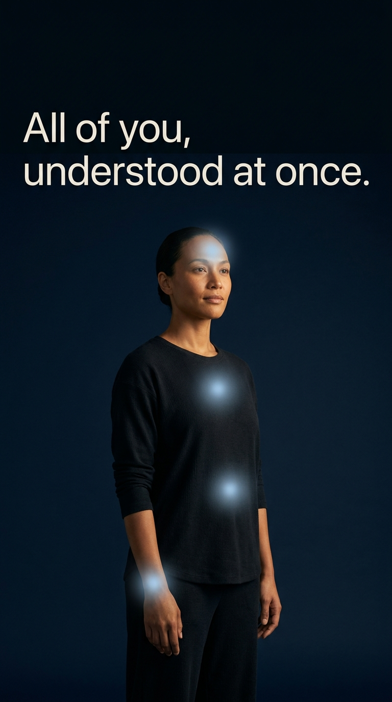
All of you, understood at once.
Heart, sleep, movement and nutrition, read together not separately.
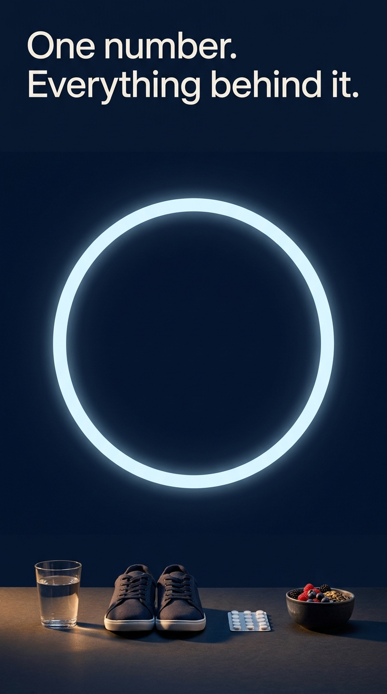
One number. Everything behind it.
Your PureScore, and the things that moved it today.
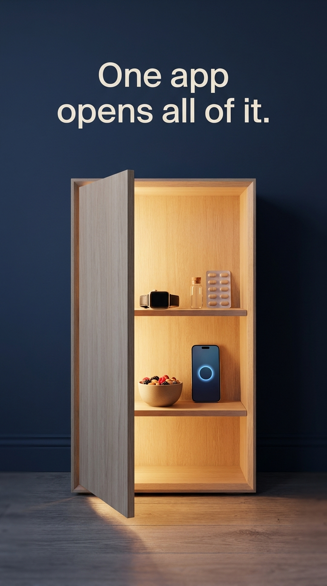
One app opens all of it.
Care, prescriptions, nutrition and answers, behind one door.
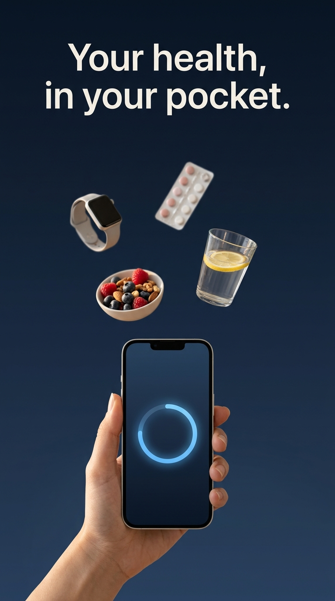
Your health, in your pocket.
Everything Pura does, carried in one hand.
Typography is a stand in. Pura has no documented typeface yet, so final artwork must be reset by the design team in the real face.
Text is model rendered. Clean on ten of ten after regeneration, but not typeset. Three assets needed a retry to fix lost or garbled headlines.
No Arabic. The RTL version is a mirror of the layout, not a translation, and is a compositing job for the design team.
These are concepts. Product screens are indicative, not real Pura UI, and nothing here has been through clinical or legal review.